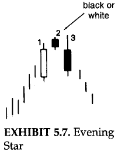

JAPANESE CANDLESTICK CHARTING TECHNIQUE
The term "candlesticks" also called "candles" is a Japanese chart
analysis technique that has been refined by generations of use in
the Far East. Until 1991, the technique reamined secret from the
Western world for over a century because no document ever mentioned
about it. But, now it is known and accepted worldwide. Some of the
features of this technique are:
- Easy to understand
- Provide earlier indications of the market turns and reversal
signals
- Furnish unique market insights by showing the underpinning
move
- Enjoyable to learn
- Applicable to any market be it Eastern or Western and enhances
analysis
- Increases the effeciency of analysis by sending visual
information
- Based on psychology of market - considers sentiments of
traders
Traditional Bar charts vs Candle charts
|
The image on the right side shows a table at the top
which shows open, close, high and low values for 5
periods. The Bar chart and the Candle chart for this
data are shown below the table.
The bar chart for a period has a vertical line which
shows the high and the low values for the day. The
horizontal line on the left-side of the vertical line
shows the open and the horizontal line on the right of
the vertical line shows the close.
The explanation for candlesticks is mentioned in the
following section.
|
|
The basics of candlesticks
Candle - A candle has a real body which is the rectangular
section and thin lines above and below the real body called shadows.
The top and the bottom sections of the rectangular body represents
the open and the close values and the tips of shadows represent
the high and the low values. Because of their shape these are
called candles. Candles can be drawn using any time frame- from
intraday to daily to weekly charts and so on. Multiple variants
of candle are shown below:
|
The white candle - when the close value is greater
the open value then this is depicted as a white candle.
This is also called bulls.
|

White candle
|
The black candle - when the open value is greater
the close value then this is depicted as a black candle.
This is also called bears.
|

Black candle
|
Shaven head- If a candle has no upper shadow, it is said
to have shaven head.
Shaven bottom- A candle with no lower shadow has a shaven
bottom.
Spinning top- The japanese term for a small real body
(black or white) is a spinning top.
|
Doji- When there are no real body i.e. when the
open and close values are really close then the candles
representing these are called doji. Doji have implications
as a reversal signal.
|

Doji
|
Trend reversal
|
Trend reversal means that the prior trend is about to
end. This is shown in the figure on the right side of
this section. The indicators have indicated that the upward
movement is about to end. And now one of the three situation
may happen:
-
The price will continue to move up a bit and then it
will move down.
-
The price will move down and after reaching a point, it
will rise again.
-
The price will fall and continue to fall.
Trend reversal is just a caution indicator. The market's
psychology is in transformation.
|
Trend reversal
|
UMBRELLA LINES
-
Candles with long lower shadows and small real bodies
(black or white) near the top of the range. These are
called umbrella lines because they look like umbrellas.
-
These umbrella lines can be either bullish or bearish
according to the market environment. The character of
umbrella lines chnages based on the prevailing trend before
the umbrella lines.
-
If an umbrella line emerges during a downtrend, it is
a signal that the downtrend should end. In such a scenario,
this umbrella line is labeled a hammer, as in "the
market is hammering out" a base.
-
The actual Japanese word for the hammer is takuri.
The hammer line looks like a hammer with its head and handle.
The hammer's long lower shadow and the close at, or near, the
high of the session graphically relays that the market sold off
sharply during the session and then bounced back to close at, or
near, the session's high. this could have bullsih ramifications.
This aspect of closing at or near highs is why the hammer should
have no, or a miniscule, upper shodow. If there was a long upper
shadow, this would mean the market closed well off its highs,
which is an important criterion for the hammer. A lower shadow
is necessary because it would display that the market had been
pushed downsharply lower during the session, but by the end
of the session, there was a "kamikaze fight" as the bears lost
controlas adduced by the fact that the market closed at, or near,
its session highs.
-
If either of lines emerges after a rally, it is a potential
top reversal signal called a hanging man. The name
"hanging man" is derived from the fact that it looks like a
hanging man with dangling legs. It has the same shape as the
hammer. The only difference is that a hanging man comes after
an advance. A close beneath the hanging man is preffered.
It is advisable to wait for bearish confirmation after
a hanging man.
The hammer and hanging man can be recognized by three
criteria:
-
The real body is at the upper end of the trading range.
The colour of the rel body is not important.
-
It has a long lower shadow that hsould be at least twice
the height of the real body.
-
It should have no, or a very short, upper shadow.
There are three aspects that differentiate the hanging man
from hammer- trend, extent of the move before the candle line,
and the confirmation.
-
Trend: A hammer must come after a decline. A hanging man
must come after a rally.
-
Extent of the move before the candle line: A hammer is valid
even if it comes after a short-term decline, but a hanging man should
emerge after an extended rally, preferably at an all-time high.
-
Confirmation: A hanging man should be confirmed, while a
hammer need not be.
The longer the lower shadow, the shorter the upper shadow; the
smaller the real body, the more meaningful the bullish hammer or
bearish hanging man.
|

Umbrella Lines
|
THE ENGULFING PATTERN
-
Most candle signals are based on combinations of
individual candle lines. The engulfing pattern is
the first of these multiple candle line patterns.
-
The engulfing pattern is a major reversal signal
with two opposite colour real bodies composing a
pattern.
-
Another name for the engulfing patter is a "hugging
line".
-
The figure shown on the right (above) of this section
shows a bullish englufing pattern. The market
is falling. And then a white bullish real body wraps
around, or engulfs, the prior period's black real body.
This shows buying pressure has over-whelmed selling
pressure.
-
The figure shown on the right (below) of this section
shows a bearish engulfing pattern. Here the
market is trending higher. A white real body engulfed
by a black real body is the signal for a top reversal.
This also shows that supply has overwhelmed demand.
There are three criteria for an engulfing pattern:
-
The market has to be in a clearly definable uptrend
(for a bearish engulfing pattern) or downtrend ( for
a bullish englufing pattern), even if the trend is
short term.
-
Two candles comprise the engulfing pattern. The second
real body must engulf the prior real body (it need not
engluf the shadows).
-
The second real body of the engulfing pattern should be
the opposite colour of the first real body. The exception
to this rule is if the first real body of the engulfing
pattern is a doji. Thus, after an extended fall, a doji
engulfed by a very large white real body could be a bottom
reversal. In an uptrend, a doji enveloped by a very large
black real body could be a bearish reversal pattern.
Some factors increasing the likelihood that an engulfing
pattern could be an important turning signal are:
-
If the first day of the engulfing pattern has a very small
real body (i.e., a spinning top) and the second day has a
very long real body. The small first real body candle
reflects a dissipation of the prior trend's force and the
large second real body proves an increase in the force
behind the new move.
-
If the engulfing pattern appears after a protracted or very
fast move. A fast or extended move creates an overextended
market (either overbought or oversold) and makes it vulnerable
to profit taking.
-
If there is heavy volume on the second real body of the
engulfing pattern.
|

Engulfing Pattern
|
Resistance or Support for Engulfing Patterns
-
A prime use of the engulfing pattern is utilizing them as support
or resistance. Provided we need to wait for the close.
-
On the right hand side of the figure shown above, the high of the
two candle lines that make the bearish engulfing pattern. That high
becomes our resistance (based on a close).
-
This technique of the bearish engulfing pattern as resistance is
especially useful if the market has moved too far from the highs
to be comfortable selling.
-
On the left hand side of the figure shown above, the same concept is
used for bullish engulfing pattern. The lowest low of this pattern
becomes support.
-
This technique of the bullish engulfing pattern as support is
especially useful if the market has moved too far from the lows
to be comfortable buying (consider correction as well).
DARK-CLOUD COVER
-
It is a reversal pattern. It is a dual-candle pattern
that is a top reversal after an uptrend or, at times,
at the top of a congestion band.
-
The first day of this two-candel pattern is a strong white
real body. The second day's price opens above the prior
session's high (that is, above the top of the upper shadow).
However, by the end of the second day's session, the market
closes deeply within the prior day's white body.
-
The greater the degree of penetration into the white body, the
more likely this is a top. Some Japanese technicians require
more than a 50-percent penetration of the black session's close
into the white real body.
-
If the black candles does not close below the halfway point
of the white candlestick, it may be best to wait for more
bearish confirmation following the dark-cloud cover.
-
In some cases it is considered as a
dark-cloud cover even if the open is over the prior session's
close instead of the prior session's high.
-
The rationale behind this bearish pattern is readily explained.
On the first session of the dark-cloud cover, the market is
ascending with a strong white candel. This is followed by a gap
higher on the next session's opening. Thus far, the bulls are in
complete control. But then the whole technical picture changes as,
on the second day of this pattern, the market closed not only
beneath the prior close, but well within the prior day's real body,
offsetting much of the gain of the first session. In such scenario,
the longs will have second thoughts about their position.
-
Those who were waiting for selling short now have a benchmark to
place a stop at the new high of the second day of the dark-cloud
cover pattern.
|
Dark Cloud Cover
|
Some factors intensifying the importance of the dark-cloud covers include:
-
The greater the penetration of the black real body's close into the
prior white real body, the greater the chnace for thr chance for a
top. If the black real body covers the prior day's entire white
body, it would be a bearish engulfing pattern rather than a dark-cloud
cover. A bearish engulfing pattern, consequently, can be a more
meaningful top reversal. If a long white real body closes above the highs
of the dark-cloud cover, or the bearish engulfing pattern it could
indicate another rally.
-
During a prolonged ascent, if there is a strong white day that opens
on its low (that is, a shaven bottom) an closes on its high (that is,
a shaven head) and the next day reveals a long black real body day,
opening on its high and closing on its low, then a shaven head and
shaven bottom black day has occurred.
-
if the second body (i.e., the black body) of the dark-cloud covers
opens above a major resistance level and then fails, it would prove
the bulls were unable to take control of the market.
-
If on the opening of the second day, there is very heavy volume,
then a buying blow off could have occurred. For example, heavy volume
at a new opneing high could mean that many new buyers have decided to
jump abroad ship. Then the market sells off. For future traders,
very high opening interest can be another warning.
Just as a bearish engulfing pattern can be resistance, so too the
highest high of the two sessions that formed the dark-cloud
cover should be resistance.
PIERCING PATTERN
-
The dark-cloud cover's counterpart is the bullish piercing
pattern. The piercing pattern is composed of two candles in
a falling market.The first candle is a black real body day
and the second is a white real body. This white candle opens
lower, ideally under the low of the prior black day. Then the
prices rebound to push well into the black candle's real body.
|
Piercing pattern
|
-
The piercing pattern is similar to the bullish engulfing pattern.
In the bullish engulfing pattern, the white real body engulfs the
entire previous black real body. For the piercing pattern, the
white real body pierces, but does not wrap around, the prior black
body.
-
In the piercing pattern, the greater the degree of penetration into
the black real body, the more likely it will become a bottom reversal.
An ideal piercing pattern will have a white real body that pushes more
than halfway into the prior session's black real body. The psychology
behind the piercing pattern is as follows:
-
The market is in a downtrend. The bearish black real body reinforces
this view.
-
The next session the market opens lower via a gap. The bears are watching the
market with happiness.
-
Then the market surges toward the close, managing not only to close unchanged
from the prior day's close, but sharply above that close. The bears will be
second-guessing their position.
-
Those who are looking to buy would say new lows could not hold and could view
it as an opportunity to buy.
-
The piercing pattern signal increases in importance based on the same factors
1 through 4 as with the dark-cloud cover, but in reverse.
-
With the dark-cover we would like to see the black real body closing more than
midway in the prior white candlestick. But there is some flexibility to this rule.
There is less flexibility with the piercing pattern. The piercing pattern's white
candlestick should push more than halfway into the black candlestick's real body.
-
The reason for less latitude with the bullish piercing pattern than with the bearish
dark-cloud cover pattern is the fact that the Japanese have three other patterns
called the on-neck, the in-neck, and the thrusting pattern.
-
All three have same basic formation as the piercing pattern. The difference among them
is in the degree of penetration by the white candle into the black candle's real body.
-
The on-neck pattern- The on-neck pattern's white candle (usually a small one)
closes near the low of the previous session.
-
The in-neck pattern- The in-neck pattern's white candle closes slightly into
the prior real body (it should also be a small white candle).
-
The thrusting pattern- The thrusting pattern should be a longer white candle that
is stronger than the in-neck pattern, but still does not close above the middle of the
prior black body.
-
The general concept that one should view a non-ideal candle pattern by:
-
How it was formed
-
Within the overall market picture
These two factors will help us gauge if the less-than-perfect pattern could have
the same implications as a more classicly defined candle pattern. It is the
subjectivity that makes computer recognition of candle patterns so difficult.
|

More of piercing pattern
|
STARS
-
A star is a small real body (white or black) that
gaps away from the large real body preceeding it.
-
In other words, the star's real body can be within
the prior session's upper shadow. All that is needed
is that the real bodies don't operlap (there are some
exceptions to this rule, which are addressed later in
this section).
-
If the star is a doji instead of a small real body, it
is called doji star. The star, especially the doji star,
is a warning that the prior trend may be ending.
-
The star's small body represents a stalemate between the
bulls and bears. The bulls are obviously in charge in a
brisky ascending market.
-
With the emergance of a star in such an environment, it is
a signal of a shift from buyers being in control to a
deadlock between the buying amd selling forces. This
deadlock may have occurred either because of a diminution
in the buying force or an increase in the selling pressure.
Either way, the star tells us the rally's prior power has
slightly dissipated. This means the market is vulnerable to
a setback.
|

Star
|
Doji star
|
|
|
|
-
The same is true, but in reverse, for a star in a downtrend
(sometimes a star during a downtrend is labled a reaindrop).
The long black candle during the downtrend visually reflects
that the bears are in command. A change is seen in the advent
of the star, which signals as environment in which the bulls
and the bears are more in equilibrium. In other words, the
downward energy has thus been cooled. Thus is not a favourable
scenario for a continuation of the bear market.
-
The star is part of four reversal patterns:
- The morning star
- The evening star
- The doji star
- The shooting star
THE MORNING STAR
-
The morning star is a bottom reversal pattern. Its
name is derived because, like the morning star (the
nickname for the planet Mercury) that foretells the
sunrise, it indicates higher prices. There are three
candle lines comprising this pattern:
-
Candle 1: An extended black real body. This pictorially
proves that the bears are in command.
-
Candle 2: A small real body that doesn't touch the prior
real body (these two lines comprise a basic star pattern).
The small real body means sellers are losing the capacity
to drive the market lower.
-
Candle 3: The concluding candle of the morning star is a white
real body that intrudes deeply into the first session's black
candle. This is the indication that the bulls have seized control.
-
The lowest low of the three lines that form this pattern
should be support as hown by the dashed line.
-
An ideal morning star would have a gap between the second
and the third bodies. Although, a lack of gap does not seem
to weaken the power of this formation. The decisive factor
is that the second candle should be a spinning top and the
third candle pushes well into the black candle.
-
A limitation with the morning star is that since this is a three-candle
pattern, one has to wait until the close of the third session to
complete the pattern. As is usually the case, if this third candle is
a tall white one, we would get the signal well after the market already
had a sharp bounce. In other words, the completion of the morning star
may not present an attractive risk.reward trading opportunity. An option
is waiting for a correction to the morning star's support area to start
cautiously from the long side.
|
Morning Star
|
THE EVENING STAR
-
The evening star is the bearish counterpart of the morning star
pattern. It is named so because the evening star (the nickname
for the planet Venus) appears just before darkness sets in. Since
the evening star is a top reversal, it should be acted upon if it
arises after an uptrend.
-
Three lines compose the evening star:
-
The first is a long white body.
-
The next is a star. The star is the first hint of a top.
-
The third line corroborates a top and completes the three-line
pattern of the evening star.The third line is a black body that
closes sharply into the first period's white real body.
-
Evening star pattern is analogous to a traffic light. The traffic
light goes from green (the bullish white body) to yellow (the star's
warning signal) to red (the black real body confirming the prior trend
has stopped).
-
An evening star should have a gap between the first and the second real bodies
and then another gap between the second and the third real bodies. But, this
second gap is rarely seen and is not necessary for the success of this pattern.
The main concern should be the extent of the intrusion of the third day's black
real body into the first day's white body.
-
Some factors increasing the likelihood that an evening or morning star could be
a reversal would include:
-
If there is no overlap among the first, second, and the third real bodies.
-
If the third candle closes deeply into the first candle's real body.
-
If there is light volume on the first candle session and heavy volume on
the third candle session. This would show a reduction of the force for
the prior trend and an increase in the direction force of the new trend.
-
The highs of the evening star become resistance as displayed by the dashed line.
|

Evening Star
|
THE MORNING AND EVENING DOJI STARS
-
The evening doji star is a distinctive form of the regular evening star.
It has a doji instead of a small real body as the second candle.
-
If there is an evening doji star in which the bottom shadow of the doji session
does not overlap with the shadows of the first or third candles (that is, the
shadows do not touch), it is considered a top reversal signal known as an
abandoned baby top. Thus pattern is very rare.
|
Evening Doji Star
|

Abandoned Baby Top
|
-
The morning doji star has a doji as star portion. This type of morning star
can be a menaingful bottom.
-
If there is a doji that has a gap before and after it (where the shadows do not
touch), it should be a bottom. This pattern is referred to as an abandoned baby
bottom. It is also extremly rare.
|
Morning Doji Star
|

Abandoned Baby Bottom
|
THE SHOOTING STAR AND THE INVERTED HAMMER
-
The shooting star- has a small real body at the lower end of
its range with a long upper shadow. We can see how this line's name
is derived. It looks like a shooting star with its long tail blazing
across the sky. The Japanese say that the shooting star shows trouble
overhead.
-
Since it is one session, it is usually not a major reversal signal as
is the bearish engulfing pattern or evening star. The shooting star
does not shows resistance unlike the bearish engulfing pattern or evening
star.
-
The shooting star is a bearish reversal signal, it must come after a rally.
An ideal shooting star has a real body that gaps away from the prior real
body. Nonetheless, as will be seen in several chart examples, this gap is not
always necessary. A lack of rising gap is more of a reason to be negative on
the shooting star. The trend could be turning less bullish if the shooting
star has no gap.
-
When we get signal after signal at the same price level, it reinforces that
resistance are. The occurrence of multiple shooting stars increases the
likelihood that this would be a reversal.
-
If a shooting star-shaped candle line comes after a downturn, it could be a bullish
signal. Such a line is called an inverted hammer. Although the inverted hammer has
the same form as a shooting star, it is not a star pattern.
|
Shooting Star
|
Inverted Hammer
|
-
Inverted hammer has the same form as a shooring star with its long upper shadow and
small real body at the lower end of the range. The only difference between the shooting
star and inverted hammer is that the inverted comes after a decline. As, a result while
the shooting star is a top reversal line, the inverted hammer is a bottom reversal line.
The colour of the inverted hammer's real body doesn't matter. This concept is similar to
the hammer and the hanging man concept in which the same shape line is bullish or bearish
depending on the preceeding trend.
-
Just as a hanging man needs bearish confirmation, the inverted hammer needs bullish confirmation.
This confirmation could be in the form of the next day opening above the inverted hammer's real
body or especially a close the next day over the inverted hammer's real body. The reason for
the required bullish verification of the inverted hammer is because its long upper shadow gives
the inverted hammer a bearish hue. To be aware of the inverted hammer session, the market opens on,
or near, its low and then rallies. The bulls fail to sustain the rally and prices close at, or near,
the lows of the session. If the next day opens, and especially closes, over the inverted hammer's real
body, the more likely these shorts will cover. This cold spark a short covering rally that could lead
to bottom pickers going long. This could feed upon itself with the result being the beginning of a rally.
LESS POWERFUL REVERSAL SIGNALS
Not always less powerful patterns such as: harami pattern, tweezers top and bottoms,
belt-hold lines, the upside-gap two crows, and counterattack lines, three black crows, three
mountains, three rivers, dumpling tops, fry-pan bottoms, and tower tops and bottoms.
THE HARAMI PATTERN
-
Spinning tops (that is, small real bodies) are components in certain formations. The
harami is one of these formations (the star, examined in chapter 5, in another).The
harami pattern is a small real body that is contained within what the Japanese call
"an unusually long black or white real body."
-
"Harami" is an old Japanese word for pregnant. The Japanese nickname for the long
candle is the "mother" candle and the small is the "baby" or "fetus". The second
candle of the harami can be white or black. If, for example, both the first and
second candles of the harami are white, it would be expressed as "white-white harami".
-
The Japanese will say that with a harami the market is "loosing its breadth". The
bearish harami displays a disparity about the market's health. Specifically after
a bull move, the long white real body's vitality is followed by the small real body's
uncertainity. Additionally, the small real body opening and closing within the prior
open-close range is another indication that the bulls' upward drive has weekened. Thus,
a trend reversal is possible.
|

The Harami Pattern
|
-
During a bear move, the selling force reflected by a long black real body is followed by the
second day's inability to decide actions. This could be a sign that a possibility of trend
reversal since the second day's small real body is an alert that the bears' power has dimished.
The combination of candle lines in the harami pattern, with its first tall real body followed
by a small real body, is the reverse of the engulfing pattern. In the engulfing pattern, a
lengthy real body engulfs the preceding small real body. Another difference between the harami
and engulfing pattern is that for the two candles of the engulfing pattern, the colour of the
real bodies should be opposite. This is not necessary for the harami. However, in most instances,
the real bodies in the harami pattern are oppositely coloured.
-
The entire range of the second session may not be within range of the first session. For harami
all that is required is that the second real body be within the first real body, even if the
shadow of the second day is above or below the prior day's high and low. In the figure (left side)
shown in this section, on the second sessio the upper shadow moved over the prior white real body.
This is still a harami because the second session's real body was contained within the first real
body.
HARAMI CROSS
-
The regular harami has a tall real body followed by a small real body. Yet, there are no rules as to what
is considered "small" candle. This, like many other charting techniques, is subjective. A the general
principle, the more diminutive the second real body, the more potent the pattern. This is usually true
because the smaller the real body, the greater the ambivalence and the more likely a trend reversal. In
the extremes, as the real body becomes smaller as the spread between the open and close narrows, a doji
is formed. doji preceded by a long blackreal body during a decline (or a tall white real body during a rally)
is distinctive type of harami reffered to as a harami cross.
-
The harami cross, becasue it contains a doji, is viewed as a strong reversal signal than the regular
harami pattern by the Japanese. The harami cross is sometimes referred to as the petrifying pattern.
The best way to justify this name is that the preceeding trend has been frozen or petrified in
preparation for a reverse move. A harami cross occuring after a very long white candle is a pattern
a long trader ignores at his or her own peril. Harami cross can also call bottoms, but they seem more
efffective at tops.
|

Harami cross
|
TWEEEZERS TOP AND BOTTOMS
-
Tweezers are two or more candle lines with matching highs or lows. They are called tweezers tops and
tweezers bottoms because they are compared to the two prongs of a tweezers. In a rising market, a
tweezers top is formed when the two or more consecutive highs match. In a falling market, a tweezers
bottom is made when two or more successive lows are the same. The tweezers could be composed of real
bodies, shadows, and/or doji. Ideally the tweezers should have a long first candle and a small real
body as the next session. This shows that whatever force the market had on the first session (bullish
force with a long white candle and bearish force with a long black candle), it was dissolving with the
following small real body with the same high (for a tweezers top) or same low (top a tweezers bottom).
If there is a bearish (for a top reversal) or a bullish (for a bottom reversal) candle signal that is
also a tweezers top, it adds more importance to the pattern.
|
Tweezers top and harami cross
|
Tweezers top and hanging man
|
-
Tweezers top and harami cross- shows how, during an ascent, a long white line is
followed by a doji. This two-candle pattern, a harami cross with the same high,
can be a significant warning.
-
Tweezers Top and Hanging Man- The figure illustrates a tweezers top formed by
a long white candle and a hanging man line. If the market opens, and especially closes,
under the hanging man's real body, odds are strong that a top has been reached. This
two-line mixture can also be considered a harami. As such, it would be a top reversal
pattern during an uptrend.
-
Tweezers Top and Shooting Star- illustrates a tweezers top joined with the second
period's bearish shooting star line.
-
Tweezers Top and Dark-Cloud Cover- an ideal tweezers would have as its second session
not only the same high, but also a small real body. In the figure, the second candle is not a
small real body. However, this second session completes a variation on the dark-cloud cover
(the second day opens above the prior day's close instead of above the prior day's high). The
black candle session's high also just touches the prior period's high and then falls. Because
of this last fact- i.e.m both sessions have the same highs- it adds more negative impact to this
variation of the dark-cloud cover.
|
Tweezers top and shooting star
|

Tweezers top and dark could cover
|
-
Tweezers Bottom and Hammer- The figure shows a hammes session that successfully tests the
prior long black candlesticks's lows. The hammer, and the successfullytest of support, proves that
the sellers are losing control of the market. This two-line combinationis also a harami. This would
be another reason to view this action as support.
-
Tweezers bottom and piercing pattern- In the figure shown, while it doesn't have a small body
for the second candle, does complete a variation on the bullish piercing line. (A true piercing line
would open under the prior day's low. Here it opened under the prior day's close.) Because of this I
view it also as a tweezers bottom.
-
These examples of tweezers are not inclusive. They are representative of how top and bottom tweezers
should be confirmed by other candlestick indications so as to be valuable forecasting tools.
|

Tweezers bottom and hammer
|

Tweezers bottom and piercing pattern
|
-
Tweezers should be viewed differently for daily, intraday, and weekly or long charts. This is because
there is nothing influential about having the same highs or lows for two daily or intraday sessions. It's
only if these sessions also meet the specific criteria for a tweezers (the first long, the second short, or
a candle pattern with the same highs or same lows) does it warrant attention. As such, the main aspect to
keep in mind with tweezers on a daily or intraday chart is that it takes a special combination of candle
lines to warrent acting upon tweezers.
-
For those who want a longer time perspective, tweezers tops and bottoms on the weekly and monthly candlestick
charts made by consecutive candlesticks could be important reversal patterns. This would be true even without
other candle confirmations becasue, on a weekly or monthly chart, for example, a weekly low this week that
successfully holds last week's lows could be a base for a rally. The same can't be said of daily or intraday
lows.
BELT-HOLD LINES
-
The belt-hold is an individual candle line. The bullish belt-hold is a strong white candle that opens
on the low of the session (or with a very small lower shadow) and closes at, or near, the session highs.
The bullish belt-hold line is also called a white opening shaven bottom. If it is at a low price area
and a long bullish belt-hold appears, it forecasts a rally.
-
The bearish belt-hold is a long black candle that opens on the high of the session (on within a few ticks
of the high) and continues lower through the session. If prices are high, the appearance of a bearish
belt-hold is a top reversal. The bearish belt-hold line is sometimes called a black opening shaven head.
-
The longer the height of the belt-hold candle line, the more significant it becomes. The actual Japanese
name for the belt-hold is a sumo wrestling term, yorikiri, which means "pushing your opponent out of the
ring while holding onto his belt".
-
A close above a black bearish belt-hold line should mean a resumption of the uptrend. A close under the
white bullish belt-hold line implies a renewal of selling pressure. Belt-hold lines are more important
if they confirm resistance or other belt-hold lines or if they have not appeared for a while.
|

Bullish belt hold line
|
Bearish belt hold line
|
UPSIDE-GAP TWO CROWS
-
An upside-gap two crows (shown in the adjecent figure) is very rare. The upside-gap refers to the gap between
the real body of the small black real body and the real body preceding it. (The real body that precedes the first
black candle is usually a long white one.) The two black candles are the "crows" in this pattern. They are analogous
to black crows peering down ominously from a tree branch. Based on this portentous (bombastic) comparision, it is
obviously a bearish pattern. An ideal upside-gap two crows has the second black real body opening above the first
black real body's open. It then closes under the first black candle's close.
-
The rationale for the bearish aspect of this pattern is as follows:
-
The market is in an uptrend and gaps higher on the open.
-
The new highs fail to hold and the market forms a black candle.
-
But the bulls can take over some support in hardship, at least, because the close on this black candle sesion
still hlds above the prior day's close.
-
The third session paints a more bearish portrait with another new high and another failure to hold these highs
into the close. More negative, however, is that this session closes under the prior day's close. If the market
is so strong, why did the new highs fail to hold and why did the market close lower? Those are the questions
that the bulls are probably nervously asking themselves. The answers might be that the market may not be so strong
as they would like. If prices fail to regain high ground the next day (that is, the fourth session), then expect
lower prices.
|
Upside gap two crows
|
THREE BLACK CROWS
-
The upside-gap two crows consists of two black candles. If there are three declining consecutive black candles, it is called
three black crows pattern. The three black crows indicate lower prices if they appear at high price levels or after a mature
advance. Three crows are also sometimes called three-winged crows. The Japanese have an rxpression, "Bad news has wings".
-
This is an appropriate saying for the three-winges crow pattern. The three crows are, as the name implies, three black candles.
Likened to the image of a group of crows sitting ominously in a tall dead tree, the three crows have bearish implications. The
three lines should close at, or near, their lows. Ideally, each of the openings should also be within the prior session's real
body.
-
The three black crows would likely be useful for longer-term traders. This is because this patter is completed on the third black
candle. Obviously, by the tim this occurs the market has already substantially corrected.
|
Three black crows
|
THREE ADVANCING WHITE SOLIDERS
-
The opposite of the three black crows is three advancing white soliders or, more commonly, three white soliders. Like much
of the candle terminology, this pattern has a military association. It is a group of three long white candles with consecutively
higher closes. If this pattern appears at low price area or after a period of stable prices, then it is a sign of strength ahead.
The three white soliders are a gradual and steady rise with each white line opening within or near the prior session's white real
body. Each of the white candles should close at, or near, its highs. It is a healthy method for the market to rise (although if
the white candles are very extended, one should be catious about an overbought market).
|
|
-
If the second and the third or just candle shows signs of weakening, it is an advance block pattern. This means the rally is
running into trouble and longs should protect themselves. Be especially cautious about this pattern during a mature uptrend.
Signs of weakening could be progressively smaller white real bodies or relatively long upper shadows.
-
If the last two candles are long white ones that make a new high followed by a small white candle, it is called a stalled
pattern. It is also sometimes called a deliberation pattern. The bulls' strength has been at least temporarily exhausted
after this formation. This last small white candle can either gap away from the long white body (in which case it becomes
a star) or it can be, as Japanese express it, "riding on the shoulder" of the long white body (i.e., be at the upper end
of the prior long white real body). The small real body discloses a deterioration of the bulls' power.
-
Although the advance block and stalled patterns are not normally top reversal patterns, they can sometimes precede a
price decline.The advance block and stalled patterns should be used to liquidate or protect longs, but usually not to
short. They are generally more consequential at higher price levels. These patterns can be at low price area or
during a rally.
-
There is not much difference between the advanced block and stalled pattern. The main factor to consider with three
white soliders is that it is most constructive for each of the three candles to close at or near its highs. If the
latter two white candles shows signs of hesitation, either with small real bodies or uppper shadows, then it is a
clue that the rally is losing force.
-
It id found that on corrections, the first or second white candle that started hte three white soliders is often
support.
-
The market sometimes correct after the three white soliders. We should expect support as the stock gets to the
second, or especially the first, white solider.
|
|
THREE MOUNTAINS AND THREE RIVERS
-
There is a group of longer-term topping and bottoming pattern that include the three moauntain, three rivers, the three
Buddha tops, inverted three Buddha, dumpling tops, fry-pan bottoms, and tower tops and bottoms.
-
Three mountain top is supposed to represent a major top. If the market backs off from a high three times or makes three
attempts at a high, it is deemed a three mountain top. The high point of the final mountain ideally should be confirmed
with a bearish candle indicator (for example, a doji or dark-cloud cover). If the central mountain of a three mountain
top is the highest mountain, it is a special type of three mountain called a three Buddha top. The reason for this name
is because, in Buddhist temples, there is a large central Buddha with smaller Buddhas (i.e., saints) on both sides. This
is the same pattern as the West's head and shoulders top.
-
Although the three Buddha top is analogous to the Western head and shoulders pattern, the theory about the japanese three
Buddha pattern was used over a hundred years before the head and shoulders was known in America. (The earliest reference
seen to a head and shoulders pattern in the United States was by Richard Schabaker in the 1930s).
-
It is intriguing how market observers from both the West and the East have come up with this same pattern. Market
psychology is the same around the world, or, as a Japanese proverb expresses, "The tone of a bird's song is the same
everywhere".
-
The three river bottom pattern is the opposite of the three mountain top. This occurs when the market tests a bottom level
three times. The peak of the troughs should be exceeded to confirm a bottom. The equivalent of the Western inverted head
and shoulders bottom is called, not surprisingly, an inverted three Buddha.
-
The peaks of each mountain were almost the same. This is not necessary. It is still considered a three mountain top if
the three price peaks are not exactly at the same highs. If A, B, and C are three peaks where B and C are slightly higher
levels. This would still be considered a three mountain top.
|

|
COUNTERATTACK LINES
Heading
Book: JAPANESE CANDLESTICK CHARTING TECHNIQUES (2nd Edition) by author STEVE NISON